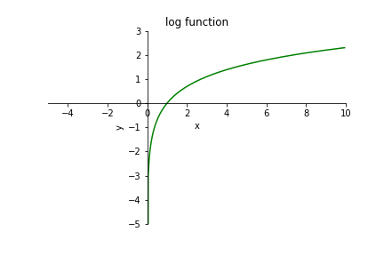

Matrices: Numpy 1#
Download exercises zip#
Introduction#
There are substantially two ways to represent matrices in Python: we’ve first encountered matrices as lists of lists, in this tutorial we focus on matrices as provided by the widely used Numpy library.
Let’s see the main differences:
List of lists - see separate notebook
native in Python
not efficient
lists are pervasive in Python, probably you will encounter matrices expressed as list of lists anyway
gives an idea of how to build a nested data structure
may help in understanding important concepts like pointers to memory and copies
Numpy - this notebook
not natively available in Python
efficient
many libraries for scientific calculations are based on Numpy (scipy, pandas)
easier syntax to access elements (slightly different from list of lists)
in rare cases might give problems of installation and/or conflicts (implementation is not pure Python)
We will only see main data types and essential commands of Numpy library, without going much into the details. In particular, we will review the new data format ndarray and compare slow algorithms with Python for cycles to faster ones made possible by idiomatic use of Numpy vector operations.
For further references, see Python Data Science Handbook, Numpy part
WARNING: Numpy does not work in Python Tutor
What to do#
unzip exercises in a folder, you should get something like this:
matrices-numpy
matrices-numpy1.ipynb
matrices-numpy1-sol.ipynb
matrices-numpy2.ipynb
matrices-numpy2-sol.ipynb
jupman.py
WARNING: to correctly visualize the notebook, it MUST be in an unzipped folder !
open Jupyter Notebook from that folder. Two things should open, first a console and then browser. The browser should show a file list: navigate the list and open the notebook
matrices-numpy/matrices-numpy1.ipynbGo on reading that notebook, and follow instuctions inside.
Shortcut keys:
to execute Python code inside a Jupyter cell, press
Control + Enterto execute Python code inside a Jupyter cell AND select next cell, press
Shift + Enterto execute Python code inside a Jupyter cell AND a create a new cell aftwerwards, press
Alt + EnterIf the notebooks look stuck, try to select
Kernel -> Restart
np.array#
First of all, we import the library, and for convenience we rename it to np
[2]:
import numpy as np
With lists of lists we have often built the matrices one row at a time, adding lists as needed. In Numpy instead we usually create in one shot the whole matrix, filling it with zeroes.
In particular, this command creates an ndarray filled with zeroes:
[3]:
mat = np.zeros( (2,3) ) # 2 rows, 3 columns
[4]:
mat
[4]:
array([[0., 0., 0.],
[0., 0., 0.]])
Note like inside array( ) the content seems represented like a list of lists, BUT in reality in physical memory the data is structured in a linear sequence which allows Python to access numbers in a faster way.
We can also create an ndarray from a list of lists:
[5]:
mat = np.array( [ [5.0,8.0,1.0],
[4.0,3.0,2.0]])
[6]:
mat
[6]:
array([[5., 8., 1.],
[4., 3., 2.]])
[7]:
type(mat)
[7]:
numpy.ndarray
Creating a matrix filled with ones#
[8]:
np.ones((3,5)) # 3 rows, 5 columns
[8]:
array([[1., 1., 1., 1., 1.],
[1., 1., 1., 1., 1.],
[1., 1., 1., 1., 1.]])
Creating a matrix filled with a number k#
[9]:
np.full((3,5), 7)
[9]:
array([[7, 7, 7, 7, 7],
[7, 7, 7, 7, 7],
[7, 7, 7, 7, 7]])
Dimensions of a matrix#
To obtain the dimension, we write like the following:
ATTENTION: after shape there are no round parenthesis !
shape is an attribute, not a function to call
[10]:
mat = np.array( [ [5.0,8.0,1.0],
[4.0,3.0,2.0]])
mat.shape
[10]:
(2, 3)
If we want to memorize the dimension in separate variables, we can use thi more pythonic mode (note the comma between num_rows and num_cols:
[11]:
num_rows, num_cols = mat.shape
[12]:
num_rows
[12]:
2
[13]:
num_cols
[13]:
3
Reading and writing#
To access data or overwrite square bracket notation is used, with the important difference that in Numpy you can write both the indeces inside the same brackets, separated by a comma:
ATTENTION: notation mat[i,j] is only for Numpy, with list of lists does not work!
[14]:
mat = np.array( [ [5.0,8.0,1.0],
[4.0,3.0,2.0]])
# Let's put number `9` in cell at row `0` and column `1`
mat[0,1] = 9
[15]:
mat
[15]:
array([[5., 9., 1.],
[4., 3., 2.]])
Let’s access cell at row 0 and column 1
[16]:
mat[0,1]
[16]:
9.0
We put number 7 into cell at row 1 and column 2
[17]:
mat[1,2] = 7
[18]:
mat
[18]:
array([[5., 9., 1.],
[4., 3., 7.]])
✪ EXERCISE: try to write like the following, what happens?
mat[0,0] = "c"
[19]:
# write here
✪ EXERCISE: Try writing like this, what happens?
mat[1,1.0]
[20]:
# write here
Filling the whole matrix#
We can MODIFY the matrix by writing inside a number with fill()
[21]:
mat = np.array([[3.0, 5.0, 2.0],
[6.0, 2.0, 9.0]])
mat.fill(7) # NOTE: returns nothings !!
[22]:
mat
[22]:
array([[7., 7., 7.],
[7., 7., 7.]])
Slices#
To extract data from an ndarray we can use slices, with the notation we already used for regular lists. There are important difference, though. Let’s see them.
The first difference is that we can extract sub-matrices by specifying two ranges among the same squared brackets:
[23]:
mat = np.array( [ [5, 8, 1],
[4, 3, 2],
[6, 7, 9],
[9, 3, 4],
[8, 2, 7]])
[24]:
mat[0:4, 1:3] # rows from 0 *included* to 4 *excluded*
# and columns from 1 *included* to 3 *excluded*
[24]:
array([[8, 1],
[3, 2],
[7, 9],
[3, 4]])
[25]:
mat[0:1,0:3] # the whole first row
[25]:
array([[5, 8, 1]])
[26]:
mat[0:1,:] # another way to extract the whole first row
[26]:
array([[5, 8, 1]])
[27]:
mat[0:5, 0:1] # the whole first column
[27]:
array([[5],
[4],
[6],
[9],
[8]])
[28]:
mat[:, 0:1] # another way to extract the whole first column
[28]:
array([[5],
[4],
[6],
[9],
[8]])
The step: We can also specify a step as a third paramter after the :. For example, to extract only even rows we can add a 2 like this:
[29]:
mat[0:5:2, :]
[29]:
array([[5, 8, 1],
[6, 7, 9],
[8, 2, 7]])
WARNING: by modifying the numpy slice you also modify the original matrix!
Differently from slices of lists which always produce new lists, this time of performance reasons with numpy slices we only obtain a view on the original data: by writing into the view we will also write on the original matrix:
[30]:
mat = np.array( [ [5, 8, 1],
[4, 3, 2],
[6, 7, 9],
[9, 3, 4],
[8, 2, 7]])
[31]:
sub_mat = mat[0:4, 1:3]
sub_mat
[31]:
array([[8, 1],
[3, 2],
[7, 9],
[3, 4]])
[32]:
sub_mat[0,0] = 999
[33]:
mat
[33]:
array([[ 5, 999, 1],
[ 4, 3, 2],
[ 6, 7, 9],
[ 9, 3, 4],
[ 8, 2, 7]])
Writing a constant in a slice#
We can also write a constant in all the cells of a region by identifying the region with a slice, and assigning a constant to it:
[34]:
mat = np.array( [ [5, 8, 1],
[4, 3, 2],
[6, 7, 9],
[9, 3, 4],
[8, 2, 5]])
mat[0:4, 1:3] = 7
mat
[34]:
array([[5, 7, 7],
[4, 7, 7],
[6, 7, 7],
[9, 7, 7],
[8, 2, 5]])
Writing a matrix into a slice#
We can also write into all the cells in a region by identifying the region with a slice, and then assigning to it a matrix from which we want to read the cells.
WARNING: To avoid problems, double check you’re using the same dimensions in both left and right slices!
[35]:
mat = np.array( [ [5, 8, 1],
[4, 3, 2],
[6, 7, 9],
[9, 3, 4],
[8, 2, 5]])
mat[0:4, 1:3] = np.array([
[10,50],
[11,51],
[12,52],
[13,53],
])
mat
[35]:
array([[ 5, 10, 50],
[ 4, 11, 51],
[ 6, 12, 52],
[ 9, 13, 53],
[ 8, 2, 5]])
Assignment and copy#
With Numpy we must take particular care when using the assignment operator =: as with regular lists, if we perform an assignment into the new variable, it will only contain a pointer to the original region of memory.
[36]:
va = np.array([1,2,3])
[37]:
va
[37]:
array([1, 2, 3])
[38]:
vb = va
[39]:
vb[0] = 100
[40]:
vb
[40]:
array([100, 2, 3])
[41]:
va
[41]:
array([100, 2, 3])
If we wanted a complete copy of the array, we should use the .copy() method:
[42]:
va = np.array([1,2,3])
[43]:
vc = va.copy()
[44]:
vc
[44]:
array([1, 2, 3])
[45]:
vc[0] = 100
[46]:
vc
[46]:
array([100, 2, 3])
[47]:
va
[47]:
array([1, 2, 3])
Calculations#
Numpy is extremely flexible, and allows us to perform on arrays almost the same operations from classical vector and matrix algebra:
[48]:
va = np.array([5,9,7])
va
[48]:
array([5, 9, 7])
[49]:
vb = np.array([6,8,0])
vb
[49]:
array([6, 8, 0])
Whenever we perform an algebraic operation, typically a NEW array is created:
[50]:
vc = va + vb
vc
[50]:
array([11, 17, 7])
Note the sum didn’t change the input:
[51]:
va
[51]:
array([5, 9, 7])
[52]:
vb
[52]:
array([6, 8, 0])
Scalar multiplication#
[53]:
m = np.array([[5, 9, 7],
[6, 8, 0]])
[54]:
3 * m
[54]:
array([[15, 27, 21],
[18, 24, 0]])
Scalar sum#
[55]:
3 + m
[55]:
array([[ 8, 12, 10],
[ 9, 11, 3]])
Multiplication#
Be careful about multiplying with *: differently from classical matrix multiplication, it multiplies element by element and so requires matrices of identical dimensions:
[56]:
ma = np.array([[1, 2, 3],
[10, 20, 30]])
mb = np.array([[1, 0, 1],
[4, 5, 6]])
ma * mb
[56]:
array([[ 1, 0, 3],
[ 40, 100, 180]])
If we want the matrix multiplication from classical algebra, we must use the @ operator taking care of having compatible matrix dimensions:
[57]:
mc = np.array([[1, 2, 3],
[10, 20, 30]])
md = np.array([[1, 4],
[0, 5],
[1, 6]])
mc @ md
[57]:
array([[ 4, 32],
[ 40, 320]])
Dividing by a scalar#
[58]:
ma = np.array([[1, 2, 0.0],
[10, 0.0, 30]])
ma / 4
[58]:
array([[0.25, 0.5 , 0. ],
[2.5 , 0. , 7.5 ]])
Careful about dividing by 0.0, the program execution will still continue with a warning and we will find a matrix with strange nan and inf which have a bad tendency to create problems later - see the section NaNs and infinities
[59]:
print(ma / 0.0)
print("AFTER")
[[inf inf nan]
[inf nan inf]]
AFTER
/home/da/.local/lib/python3.7/site-packages/ipykernel_launcher.py:1: RuntimeWarning: divide by zero encountered in true_divide
"""Entry point for launching an IPython kernel.
/home/da/.local/lib/python3.7/site-packages/ipykernel_launcher.py:1: RuntimeWarning: invalid value encountered in true_divide
"""Entry point for launching an IPython kernel.
Aggregation#
Numpy provides several functions to calculate statistics, we only show some:
[60]:
m = np.array([[5, 4, 6],
[3, 7, 1]])
np.sum(m)
[60]:
26
[61]:
np.max(m)
[61]:
7
[62]:
np.min(m)
[62]:
1
Aggregating by row or column#
By adding the axis parameter we can tell numpy to perform the affrefation on each column (axis=0) or row (axis=1):
[63]:
np.max(m, axis=0) # the maximum of each column
[63]:
array([5, 7, 6])
[64]:
np.sum(m, axis=0) # sum each column
[64]:
array([ 8, 11, 7])
[65]:
np.max(m, axis=1) # the maximum of each row
[65]:
array([6, 7])
[66]:
np.sum(m, axis=1) # sum each row
[66]:
array([15, 11])
Filtering#
Numpy offers a mini-language to filter the numbers in an array, by specifying the selection criteria. Let’s see an example:
[67]:
mat = np.array([[5, 2, 6],
[1, 4, 3]])
mat
[67]:
array([[5, 2, 6],
[1, 4, 3]])
Suppose you want to obtain an array with all the numbers from mat which are greater than 2.
We can tell numpy the matrix mat we want to use, then inside square brackets we put a kind of boolean conditions, reusing the mat variable like so:
[68]:
mat[ mat > 2 ]
[68]:
array([5, 6, 4, 3])
Exactly, what is that strange expression we put inside the squared brackts? Let’s try executing it alone:
[69]:
mat > 2
[69]:
array([[ True, False, True],
[False, True, True]])
We note it gives us a matrix of booleans, which are True whenever the corresponding cell in the original matrix satisfies the condition we imposed.
By then placing this expression inside mat[ ] we obtain the values from the original matrix which satisfy the expression:
[70]:
mat[ mat > 2 ]
[70]:
array([5, 6, 4, 3])
Not only that, we can also build more complex expressions by using
&symbol as the logical conjunction and|(pipe character) as the logical conjunction or
[71]:
mat = np.array([[5, 2, 6],
[1, 4, 3]])
mat[(mat > 3) & (mat < 6)]
[71]:
array([5, 4])
[72]:
mat = np.array([[5, 2, 6],
[1, 4, 3]])
mat[(mat < 2) | (mat > 4)]
[72]:
array([5, 6, 1])
WARNING: REMEMBER THE ROUND PARENTHESIS AMONG THE VARIOUS EXPRESSIONS!
EXERCISE: try to rewrite the expressions above by ‘forgetting’ the round parenthesis in the various components (left/right/both) and see what happens. Do you obtain errors or unexpected results?
[ ]:
#jupman-purge-output
mat = np.array([[5, 2, 6],
[1, 4, 3]])
# write here
Show solution
[ ]:
#jupman-purge-output
mat = np.array([[5, 2, 6],
[1, 4, 3]])
print( mat[(mat > 3) & mat < 6] )
print( mat[mat > 3 & (mat < 6)] )
#print( mat[mat > 3 & mat < 6] )
# the last one produces:
# ---------------------------------------------------------------------------
# ValueError Traceback (most recent call last)
# <ipython-input-212-33c5a083b265> in <module>
# 3 print( mat[(mat > 3) & mat < 6] )
# 4 print( mat[mat > 3 & (mat < 6)] )
# ----> 5 print( mat[mat > 3 & mat < 6] )
# ValueError: The truth value of an array with more than one element is ambiguous. Use a.any() or a.all()
WARNING: and and or DON’T WORK!
EXERCISE: try rewriting the expressions above by substituting & with and and | with or and see what happens. Do you get errors or unexpected results?
[ ]:
mat = np.array([[5, 2, 6],
[1, 4, 3]])
# write here
Show solution
[ ]:
mat = np.array([[5, 2, 6],
[1, 4, 3]])
print( mat[(mat > 3) and (mat < 6) ] )
#---------------------------------------------------------------------------
#ValueError Traceback (most recent call last)
#<ipython-input-218-3edf025af7c0> in <module>
# 4
# 5 # write here
#----> 6 print( mat[(mat > 3) and (mat < 6) ] )
#ValueError: The truth value of an array with more than one element is ambiguous. Use a.any() or a.all()
#print( mat[(mat > 3) or (mat < 6)] )
#---------------------------------------------------------------------------
#ValueError Traceback (most recent call last)
#<ipython-input-219-192c022d9d87> in <module>
# 16
# 17
#---> 18 print( mat[(mat > 3) or (mat < 6)] )
#ValueError: The truth value of an array with more than one element is ambiguous. Use a.any() or a.all()
Finding indexes with np.where#
We’ve seen how to find the content of cells which satisfy a certain criteria. What if we wanted to find the indeces of those cells? In that case we would use the function np.where, passing as parameter the condition expressed in the same language used before.
For example, if we wanted to find the indexes of cells containing numbers less than 40 or greater than 60 we would write like so:
[75]:
#0 1 2 3 4 5
v = np.array([30,60,20,70,40,80])
np.where((v < 40) | (v > 60))
[75]:
(array([0, 2, 3, 5]),)
Writing into cells which satisfy a criteria#
We can use np.where to substitute values in the cells which satisfy a criteria with other values which we’ll be expressed in two extra matrices ma and mb. In case the criteria is satisfied, numpy will take the corresponding values from ma, otherwise from mb.
[76]:
ma = np.array([
[ 1, 2, 3, 4],
[ 5, 6, 7, 8],
[ 9,10,11,12]
])
mb = np.array([
[ -1, -2, -3, -4],
[ -5, -6, -7, -8],
[ -9,-10,-11,-12]
])
mat = np.array([
[40,70,10,80],
[20,30,60,40],
[10,60,80,90]
])
np.where(mat < 50, ma, mb)
[76]:
array([[ 1, -2, 3, -4],
[ 5, 6, -7, 8],
[ 9, -10, -11, -12]])
arange and linspace sequences#
The standard function range of Python does not allow for float increments, which we can instead obtain by building sequences of float numbers with np.arange, by specifying left limit (included), right limit (excluded) and the increment:
[77]:
np.arange(0.0, 1.0, 0.2)
[77]:
array([0. , 0.2, 0.4, 0.6, 0.8])
Alternatively, we can use np.linspace, which takes a left limit included, a right limit this time included, and the number of repetitions to subdivide this space:
[78]:
np.linspace(0, 0.8, 5)
[78]:
array([0. , 0.2, 0.4, 0.6, 0.8])
[79]:
np.linspace(0, 0.8, 10)
[79]:
array([0. , 0.08888889, 0.17777778, 0.26666667, 0.35555556,
0.44444444, 0.53333333, 0.62222222, 0.71111111, 0.8 ])
NaNs and infinities#
Float numbers can be numbers and…. not numbers, and infinities. Sometimes during calculations extremal conditions may arise, like when dividing a small number by a huge number. In such cases, you might end up having a float which is a dreaded Not a Number, NaN for short, or you might get an infinity. This can lead to very awful unexpected behaviours, so you must be well aware of it. Examples:
[80]:
10e99999999999999999999999
[80]:
inf
[81]:
10e99999999999999999999999 / 10e99999999999999999999999
[81]:
nan
Following behaviours are dictated by IEEE Standard for Binary Floating-Point for Arithmetic (IEEE 754) which Numpy uses and is implemented in all CPUs, so they actually regard all programming languages.
NaNs#
A NaN is Not a Number. Which is already a silly name, since a NaN is actually a very special member of floats, with this astonishing property:
WARNING: NaN IS NOT EQUAL TO ITSELF !!!!
Yes you read it right, NaN is really not equal to itself.
Even if your mind wants to refuse it, we are going to confirm it.
To get a NaN, you can use Python module math which holds this alien item:
[82]:
import math
math.nan # notice it prints as 'nan' with lowercase n
[82]:
nan
As we said, a NaN is actually considered a float:
[83]:
type(math.nan)
[83]:
float
Still, it behaves very differently from its fellow floats, or any other object in the known universe:
[84]:
math.nan == math.nan # what the F... alse
[84]:
False
Detecting NaN#
Given the above, if you want to check if a variable x is a NaN, you cannot write this:
[85]:
x = math.nan
if x == math.nan: # WRONG
print("I'm NaN ")
else:
print("x is something else ??")
x is something else ??
To correctly handle this situation, you need to use math.isnan function:
[86]:
x = math.nan
if math.isnan(x): # CORRECT
print("x is NaN ")
else:
print("x is something else ??")
x is NaN
Notice math.isnan also work with negative NaN:
[87]:
y = -math.nan
if math.isnan(y): # CORRECT
print("y is NaN ")
else:
print("y is something else ??")
y is NaN
Sequences with NaNs#
Still, not everything is completely crazy. If you compare a sequence holding NaNs to another one, you will get reasonable results:
[88]:
[math.nan, math.nan] == [math.nan, math.nan]
[88]:
True
Exercise NaN: two vars#
Given two number variables x and y, write some code that prints "same" when they are the same, even when they are NaN. Otherwise, prints `”not the same”
[ ]:
# expected output: same
x = math.nan
y = math.nan
# expected output: not the same
#x = 3
#y = math.nan
# expected output: not the same
#x = math.nan
#y = 5
# expected output: not the same
#x = 2
#y = 7
# expected output: same
#x = 4
#y = 4
# write here
Show solution
[ ]:
# expected output: same
x = math.nan
y = math.nan
# expected output: not the same
#x = 3
#y = math.nan
# expected output: not the same
#x = math.nan
#y = 5
# expected output: not the same
#x = 2
#y = 7
# expected output: same
#x = 4
#y = 4
if math.isnan(x) and math.isnan(y):
print('same')
elif x == y:
print('same')
else:
print('not the same')
Operations on NaNs#
Any operation on a NaN will generate another NaN:
[90]:
5 * math.nan
[90]:
nan
[91]:
math.nan + math.nan
[91]:
nan
[92]:
math.nan / math.nan
[92]:
nan
The only thing you cannot do is dividing by zero with an unboxed NaN:
math.nan / 0
---------------------------------------------------------------------------
ZeroDivisionError Traceback (most recent call last)
<ipython-input-94-1da38377fac4> in <module>
----> 1 math.nan / 0
ZeroDivisionError: float division by zero
NaN corresponds to boolean value True:
[93]:
if math.nan:
print("That's True")
That's True
NaN and Numpy#
When using Numpy you are quite likely to encounter NaNs, so much so they get redefined inside Numpy, but they are exactly the same as in math module:
[94]:
np.nan
[94]:
nan
[95]:
math.isnan(np.nan)
[95]:
True
[96]:
np.isnan(math.nan)
[96]:
True
In Numpy when you have unknown numbers you might be tempted to put a None. You can actually do it, but look closely at the result:
[97]:
import numpy as np
np.array([4.9,None,3.2,5.1])
[97]:
array([4.9, None, 3.2, 5.1], dtype=object)
The resulting array type is not an array of float64 which allows fast calculations, instead it is an array containing generic objects, as Numpy is assuming the array holds heterogenous data. So what you gain in generality you lose it in performance, which should actually be the whole point of using Numpy.
Despite being weird, NaNs are actually regular float citizen so they can be stored in the array:
[98]:
np.array([4.9,np.nan,3.2,5.1]) # Notice how the `dtype=object` has disappeared
[98]:
array([4.9, nan, 3.2, 5.1])
Where are the NaNs ?#
Let’s try to see where we can spot NaNs and other weird things such infinities in the wild
First, let check what happens when we call function log of standard module math. As we know, log function behaves like this:
\(x < 0\): not defined
\(x = 0\): tends to minus infinity
\(x > 0\): defined

So we might wonder what happens when we pass to it a value where it is not defined. Let’s first try with the standard math.log from Python library:
>>> math.log(-1)
ValueError Traceback (most recent call last)
<ipython-input-38-d6e02ba32da6> in <module>
----> 1 math.log(-1)
ValueError: math domain error
In this case ValueError is raised and the execution gets interrupted.
Let’s try the equivalent with Numpy:
[99]:
np.log(-1)
/home/da/.local/lib/python3.7/site-packages/ipykernel_launcher.py:1: RuntimeWarning: invalid value encountered in log
"""Entry point for launching an IPython kernel.
[99]:
nan
In this case we actually got as a result np.nan, so execution was not interrupted, Jupyter only informed us with an extra print that something dangerous happened.
The default behaviour of Numpy regarding dangerous calculations is to perform them anyway and storing the result in as a NaN or other limit objects. This also works for arrays calculations:
[100]:
np.log(np.array([3,7,-1,9]))
/home/da/.local/lib/python3.7/site-packages/ipykernel_launcher.py:1: RuntimeWarning: invalid value encountered in log
"""Entry point for launching an IPython kernel.
[100]:
array([1.09861229, 1.94591015, nan, 2.19722458])
Infinities#
As we said previously, NumPy uses the IEEE Standard for Binary Floating-Point for Arithmetic (IEEE 754). Since somebody at IEEE decided to capture the misteries of infinity into floating numbers, we have yet another citizen to take into account when performing calculations (for more info see Numpy documentation on constants):
Positive infinity np.inf#
[101]:
np.array( [ 5 ] ) / 0
/home/da/.local/lib/python3.7/site-packages/ipykernel_launcher.py:1: RuntimeWarning: divide by zero encountered in true_divide
"""Entry point for launching an IPython kernel.
[101]:
array([inf])
[102]:
np.array( [ 6,9,5,7 ] ) / np.array( [ 2,0,0,4 ] )
/home/da/.local/lib/python3.7/site-packages/ipykernel_launcher.py:1: RuntimeWarning: divide by zero encountered in true_divide
"""Entry point for launching an IPython kernel.
[102]:
array([3. , inf, inf, 1.75])
Be aware that:
Not a Number is not equivalent to infinity
positive infinity is not equivalent to negative infinity
infinity is equivalent to positive infinity
This time, infinity is equal to infinity:
[103]:
np.inf == np.inf
[103]:
True
so we can safely detect infinity with ==:
[104]:
x = np.inf
if x == np.inf:
print("x is infinite")
else:
print("x is finite")
x is infinite
Alternatively, we can use the function np.isinf:
[105]:
np.isinf(np.inf)
[105]:
True
Negative infinity#
We can also have negative infinity, which is different from positive infinity:
[106]:
-np.inf == np.inf
[106]:
False
Note that isinf detects both positive and negative:
[107]:
np.isinf(-np.inf)
[107]:
True
To actually check for negative infinity you have to use isneginf:
[108]:
np.isneginf(-np.inf)
[108]:
True
[109]:
np.isneginf(np.inf)
[109]:
False
Where do they appear? As an example, let’s try np.log function:
[110]:
np.log(0)
/home/da/.local/lib/python3.7/site-packages/ipykernel_launcher.py:1: RuntimeWarning: divide by zero encountered in log
"""Entry point for launching an IPython kernel.
[110]:
-inf
Combining infinities and NaNs#
When performing operations involving infinities and NaNs, IEEE arithmetics tries to mimic classical analysis, sometimes including NaN as a result:
[111]:
np.inf + np.inf
[111]:
inf
[112]:
- np.inf - np.inf
[112]:
-inf
[113]:
np.inf * -np.inf
[113]:
-inf
What in classical analysis would be undefined, here becomes NaN:
[114]:
np.inf - np.inf
[114]:
nan
[115]:
np.inf / np.inf
[115]:
nan
As usual, combining with NaN results in NaN:
[116]:
np.inf + np.nan
[116]:
nan
[117]:
np.inf / np.nan
[117]:
nan
Negative zero#
We can even have a negative zero - who would have thought?
[118]:
np.NZERO
[118]:
-0.0
Negative zero of course pairs well with the more known and much appreciated positive zero:
[119]:
np.PZERO
[119]:
0.0
NOTE: Writing np.NZERO or -0.0 is exactly the same thing. Same goes for positive zero.
At this point, you might start wondering with some concern if they are actually equal. Let’s try:
[120]:
0.0 == -0.0
[120]:
True
Great! Finally one thing that makes sense.
Given the above, you might think in a formula you can substitute one for the other one and get same results, in harmony with the rules of the universe.
Let’s make an attempt of substitution, as an example we first try dividing a number by positive zero (even if math teachers tell us such divisions are forbidden) - what will we ever get??
\(\frac{5.0}{0.0}=???\)
In Numpy terms, we might write like this to box everything in arrays:
[121]:
np.array( [ 5.0 ] ) / np.array( [ 0.0 ] )
/home/da/.local/lib/python3.7/site-packages/ipykernel_launcher.py:1: RuntimeWarning: divide by zero encountered in true_divide
"""Entry point for launching an IPython kernel.
[121]:
array([inf])
Hmm, we got an array holding an np.inf.
If 0.0 and -0.0 are actually the same, dividing a number by -0.0 we should get the very same result, shouldn’t we?
Let’s try:
[122]:
np.array( [ 5.0 ] ) / np.array( [ -0.0 ] )
/home/da/.local/lib/python3.7/site-packages/ipykernel_launcher.py:1: RuntimeWarning: divide by zero encountered in true_divide
"""Entry point for launching an IPython kernel.
[122]:
array([-inf])
Oh gosh. This time we got an array holding a negative infinity -np.inf
If all of this seems odd to you, do not bash at Numpy. This is the way pretty much any CPUs does floating point calculations so you will find it in almost ALL computer languages.
What programming languages can do is add further controls to protect you from paradoxical situations, for example when you directly write 1.0/0.0 Python raises ZeroDivisionError (blocking thus execution), and when you operate on arrays Numpy emits a warning (but doesn’t block execution).
Exercise: detect proper numbers#
Write some code that PRINTS equal numbers if two numbers x and y passed are equal and actual numbers, and PRINTS not equal numbers otherwise.
NOTE: not equal numbers must be printed if any of the numbers is infinite or NaN.
To solve it, feel free to call functions indicated in Numpy documentation about costants
[ ]:
# expected: equal numbers
x = 5
y = 5
# expected: not equal numbers
#x = np.inf
#y = 3
# expected: not equal numbers
#x = 3
#y = np.inf
# expected: not equal numbers
#x = np.inf
#y = np.nan
# expected: not equal numbers
#x = np.nan
#y = np.inf
# expected: not equal numbers
#x = np.nan
#y = 7
# expected: not equal numbers
#x = 9
#y = np.nan
# expected: not equal numbers
#x = np.nan
#y = np.nan
# write here
Show solution
[ ]:
# expected: equal numbers
x = 5
y = 5
# expected: not equal numbers
#x = np.inf
#y = 3
# expected: not equal numbers
#x = 3
#y = np.inf
# expected: not equal numbers
#x = np.inf
#y = np.nan
# expected: not equal numbers
#x = np.nan
#y = np.inf
# expected: not equal numbers
#x = np.nan
#y = 7
# expected: not equal numbers
#x = 9
#y = np.nan
# expected: not equal numbers
#x = np.nan
#y = np.nan
# SOLUTION 1 - the ugly one
if np.isinf(x) or np.isinf(y) or np.isnan(x) or np.isnan(y):
print('not equal numbers')
else:
print('equal numbers')
# SOLUTION 2 - the pretty one
if np.isfinite(x) and np.isfinite(y):
print('equal numbers')
else:
print('not equal numbers')
Exercise: guess expressions#
For each of the following expressions, try to guess the result
WARNING: the following may cause severe convulsions and nausea.
During clinical trials, both mathematically inclined and math-averse patients have experienced illness, for different reasons which are currently being investigated.
a. 0.0 * -0.0
b. (-0.0)**3
c. np.log(-7) == math.log(-7)
d. np.log(-7) == np.log(-7)
e. np.isnan( 1 / np.log(1) )
f. np.sqrt(-1) * np.sqrt(-1) # sqrt = square root
g. 3 ** np.inf
h 3 ** -np.inf
i. 1/np.sqrt(-3)
j. 1/np.sqrt(-0.0)
m. np.sqrt(np.inf) - np.sqrt(-np.inf)
n. np.sqrt(np.inf) + ( 1 / np.sqrt(-0.0) )
o. np.isneginf(np.log(np.e) / np.sqrt(-0.0))
p. np.isinf(np.log(np.e) / np.sqrt(-0.0))
q. [np.nan, np.inf] == [np.nan, np.inf]
r. [np.nan, -np.inf] == [np.nan, np.inf]
s. [np.nan, np.inf] == [-np.nan, np.inf]
Continue#
Go on with Matrices: Numpy 2 - Exercises